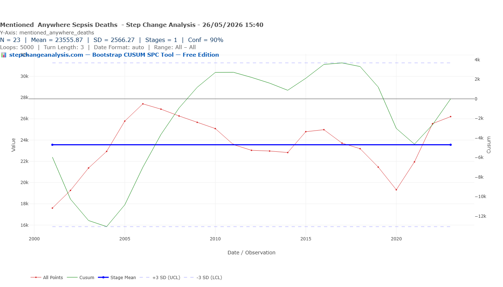
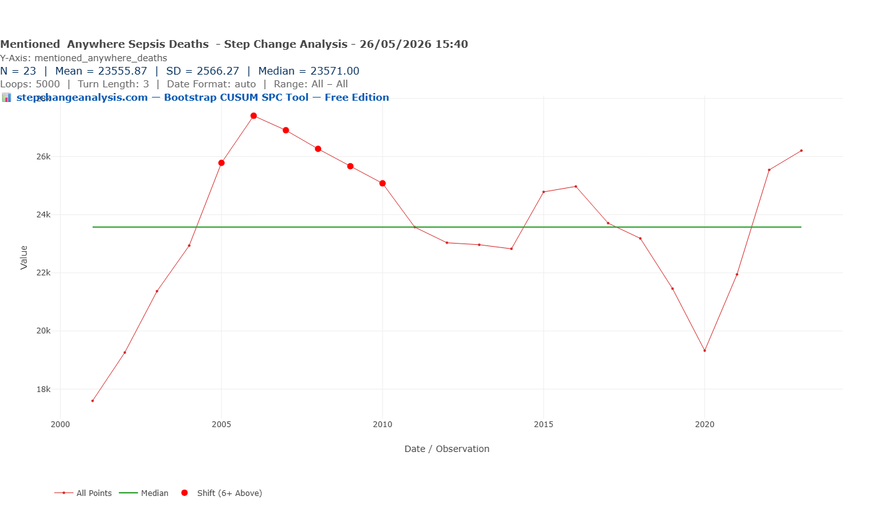
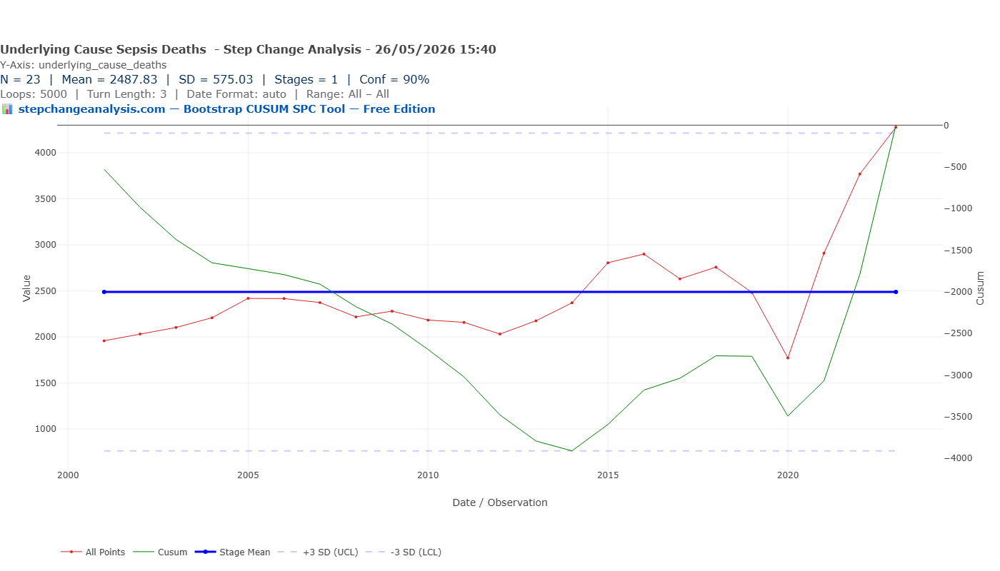
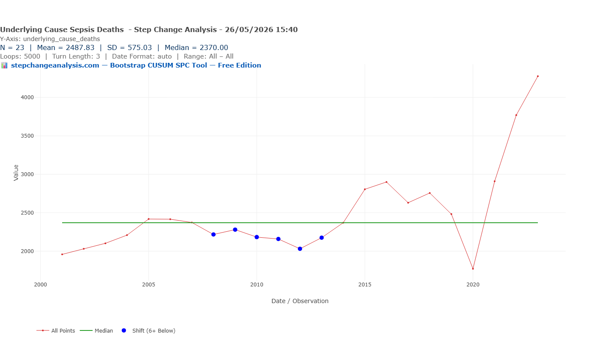
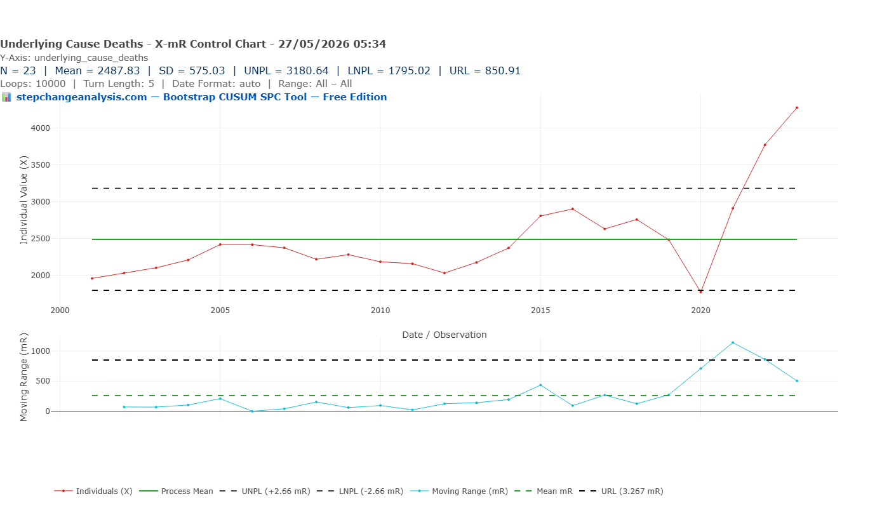
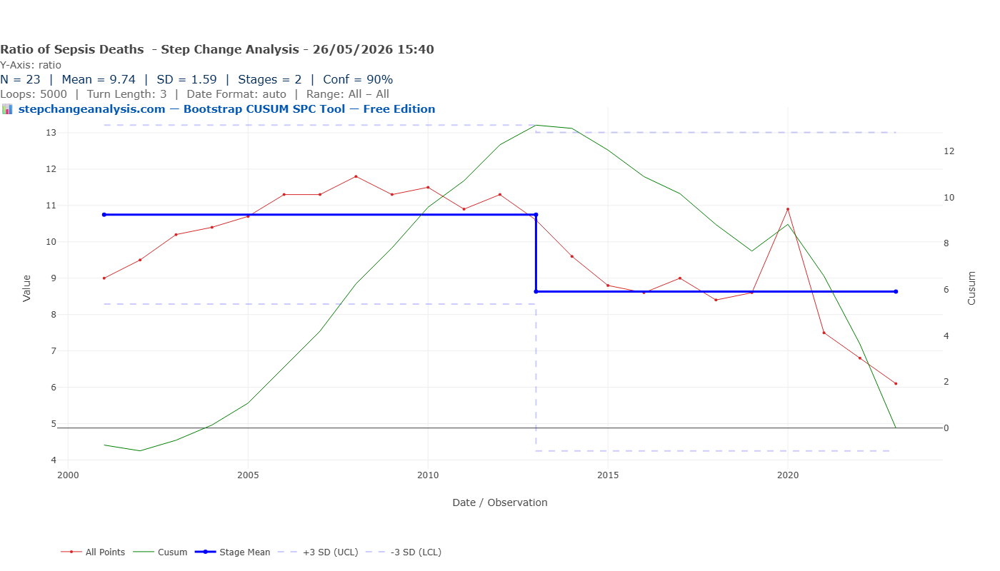
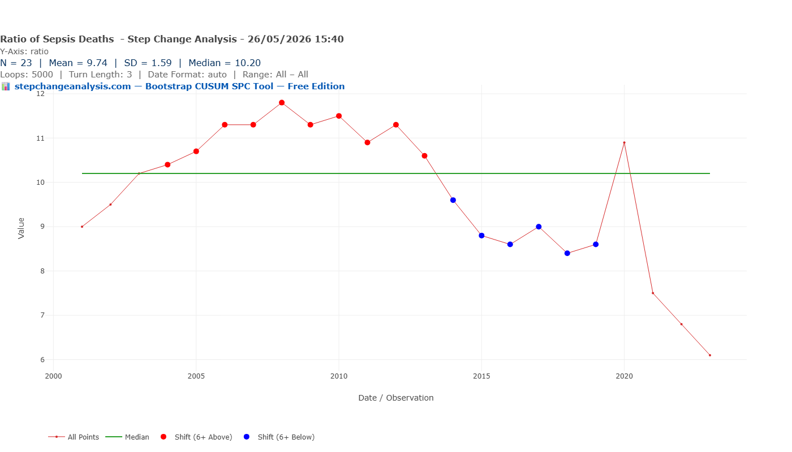

The Sepsis Six: Does Public Data Show Whether It Worked?
In 2005, an NHS intensive care consultant distilled a 58-recommendation international guideline into six actions any ward nurse could perform within one hour. The Sepsis Six is now used in 96% of British hospitals and 37 countries. Bootstrap CUSUM applied to every available public measure of sepsis mortality in England — 22 years of data, two series, six charts — finds one stage and no change point in either. The data cannot prove or disprove whether the intervention saved lives. This article explains precisely why — and why that matters for every clinical quality improvement programme in the NHS.
Same Data, Three Charts, Three Very Different Stories explains what the green CUSUM line means and why it detects structural change that other charts miss — including a step-by-step guide to reading the chart. Takes 5 minutes and makes every chart in this article easier to read.
Read above first 📚 Glossary — CUSUM, Deming, Meadows, Joiner, PDSA and more☰ Table of Contents — click to expand
- One hour. Six actions. A bundle that spread around the world.
- What is sepsis — and why measuring it is harder than it looks
- The Bootstrap CUSUM analysis — two series, six charts
- The ratio — the article’s most important finding
- What the Surviving Sepsis Campaign claimed — and what the evidence actually shows
- The Deming/Joiner lens: what the null result actually means
- Bright Spots: where is the Sepsis Six working — and why?
- The patients who survived — and what happened to them
- What would actually show whether the Sepsis Six worked?
- The broader lesson for clinical quality improvement
One hour. Six actions. A bundle that spread around the world.
In 2005, Dr Ron Daniels — an intensive care consultant at Good Hope Hospital in Sutton Coldfield — looked at the Surviving Sepsis Campaign’s international guidelines and saw a problem. The guidelines were 58 recommendations across 16 pages. Five years after publication, they were being achieved in fewer than one in seven patients. The gap between the evidence and the ward was not a knowledge problem. It was a translation problem.
Daniels and colleagues distilled the guidelines into six actions that any nurse or doctor could perform at the bedside, without specialist equipment, within one hour of recognising sepsis. They called it the Sepsis Six.
⚡ The Sepsis Six — six actions within one hour of suspected sepsis
Source: UK Sepsis Trust, 2005. Endorsed by NICE. Used in 96% of NHS trusts and 37 countries. The six actions work as a bundle — all six together, within one hour. Partial compliance produces partial benefit.
The bundle was pragmatic by design. Daniels recognised that a complex protocol requiring specialist knowledge would not reach the ward in time. Sepsis kills through a dysregulated inflammatory response that progresses from infection to organ failure to death within hours. The Sepsis Six addressed the hours immediately after recognition — the window when bedside action matters most.
In 2011, the UK Sepsis Trust published the first evidence that the Sepsis Six was associated with a 50% reduction in mortality compared to patients who did not receive the full bundle. The UK Sepsis Trust was formally founded in 2012. NHS England adopted the Sepsis Six as a CQUIN indicator — a financial incentive measure — in 2013. The NICE guideline NG51 on sepsis recognition and management was published in 2015. The Think Sepsis mandatory screening campaign launched in 2017.
By 2019, survival rates from sepsis in the UK had reportedly risen from 70% in 2012 to 80%. The Sepsis Six appeared to be a success story.
Bootstrap CUSUM asks a different question.
What is sepsis — and why measuring it is harder than it looks
Sepsis is not a disease. It is a syndrome — the body’s dysregulated response to infection, producing organ dysfunction that can progress to septic shock and death. The infecting organism can be bacterial, viral, or fungal. The source can be anywhere: a urinary tract infection, pneumonia, an infected wound, a bowel perforation. What makes sepsis sepsis is not the infection but the body’s catastrophic response to it.
This creates a fundamental measurement problem. When a person dies of pneumonia complicated by sepsis, what was the cause of death — the pneumonia or the sepsis? International death certification guidelines ask certifiers to record the underlying cause: the disease that started the chain of events. For most sepsis deaths, the underlying cause is the precipitating infection — pneumonia, urinary infection, bowel perforation — not the sepsis itself.
This is not a data error. It is a feature of how death certification works. But it has a critical implication for evaluating the Sepsis Six: the publicly available mortality series — deaths where A40 or A41 was the underlying cause — is both incomplete and unstable over time. If clinical campaigns train staff to recognise and code sepsis as the primary cause more frequently, the underlying cause series will rise even if mortality is actually falling.
📊 Data note: Analysis uses ONS “Deaths involving sepsis, England and Wales, 2001 to 2023” user-requested dataset (released 2024). Two series: Table 1 (sepsis as underlying cause, A40/A41) and Table 2 (sepsis mentioned anywhere on certificate). N=23 annual observations for both. Bootstrap CUSUM, Loops=5,000, Turn Length=3, Conf=90%. England and Wales population grew from approximately 52 million in 2001 to 60 million in 2023 — a 15% increase — and aged substantially over the same period. Both factors increase raw sepsis deaths independently of any change in clinical outcomes. The age-standardised rate would correct for this but is not available in this dataset. Data file: ⇣ sepsis-both-series.csv
The recognition campaigns that changed the coding
Four campaigns ran in sequence and each changed how sepsis was documented and coded:
- Surviving Sepsis Campaign (2002 onwards): International initiative raising awareness among intensivists and emergency physicians. Primarily an ICU-level intervention. Published major guidelines in 2004, 2008, 2012, and 2016.
- NHS England CQUIN for sepsis screening (2013): Financial incentive — trusts received additional payment for documenting sepsis screening. Directly incentivised staff to document and code sepsis. This is the year the Bootstrap CUSUM detects the ratio change point at 95.5% confidence.
- NICE guideline NG51 (2016, updated 2017 and 2019): First NICE guideline specifically addressing sepsis recognition in all clinical settings. Introduced “Red Flag Sepsis.” Extended the focus beyond ICU to ward and community settings.
- NHS England Think Sepsis mandatory screening (2017): Made sepsis screening mandatory in A&E and acute admissions. The most significant coding-level intervention — ensuring sepsis was formally documented whenever present.
The coding change point at 2013 aligns precisely with the CQUIN introduction. Financial incentives for documentation produce documentation improvements. That is not a criticism — accurate coding is genuinely valuable for resource allocation and research. But it must be separated from clinical outcome measurement. The Bootstrap CUSUM does exactly this: it detects a structural change in the coding ratio at 2013, while finding no structural change in either mortality series.
The Bootstrap CUSUM analysis — two series, six charts
The ONS dataset provides two distinct mortality series for England and Wales from 2001 to 2023. Running Bootstrap CUSUM on both — and comparing them — tells a more complete story than either series alone.
Series 1 — Deaths where sepsis was mentioned anywhere on the certificate
This is the more complete clinical measure. It captures deaths associated with sepsis regardless of which condition was coded as the primary cause. The values range from approximately 17,600 in 2001 to 26,200 in 2023, with a peak of approximately 27,400 in 2006 and a trough of approximately 19,300 in 2020.


Series 2 — Deaths where sepsis was the underlying (primary) cause
This is the headline measure most often cited in mortality statistics. It counts only deaths where A40 (streptococcal sepsis) or A41 (other sepsis) was recorded as the primary underlying cause. Values range from approximately 1,958 in 2001 to 4,276 in 2023.



The ratio — the article’s most important finding
Comparing the two series year by year reveals something the individual series cannot show. In 2001, for every death where sepsis was the primary underlying cause, there were approximately nine deaths where sepsis appeared somewhere on the certificate but not as the primary cause. By 2022 that ratio had fallen to approximately 6.8. By 2023 it was 6.1.
A falling ratio means an increasing proportion of sepsis deaths are being coded as primary sepsis rather than as the underlying infection. This is a coding improvement, not a clinical improvement. More deaths are being correctly identified as primarily attributable to the septic response.
Running Bootstrap CUSUM on the ratio itself — not on either mortality series, but on the ratio between them — produces the article’s most revealing result.


| Stage | Period | Mean ratio | Change | Confidence | Interpretation |
|---|---|---|---|---|---|
| 1 | 2001–2013 | 10.75 | Baseline | Baseline | Pre-Think Sepsis era. For every 1 death coded as primary sepsis, ~11 were coded to underlying infection. High under-coding of sepsis as primary cause. |
| 2 | 2013–2023 | 8.63 | −19.7% | 95.5% | Think Sepsis coding improvement era. For every 1 death coded as primary sepsis, ~9 coded to underlying infection. Structural change in coding practice, not in clinical outcomes. |
📈 Why the ratio finding changes everything
If the Bootstrap CUSUM had found a change point in clinical mortality (either series) but not in the ratio, that would suggest genuine clinical improvement. If it had found a change point in the ratio but not in mortality, that would suggest pure coding improvement with no clinical effect. What it actually finds is: no change point in either mortality series, and a significant change point in the ratio dated precisely to the CQUIN incentive year of 2013.
This means the rising underlying cause mortality series from 2013 onwards is primarily a coding improvement, not a clinical trend. The “worsening” headline number — sepsis deaths rising from ~2,000 to ~4,000 as primary cause — is substantially explained by better recognition. And the stability of the “mentioned anywhere” series — no upward trend — suggests total sepsis-associated mortality has not dramatically increased in the way the underlying cause series implies.
The net result: better coding. Not better outcomes. Not worse outcomes. A measurement change that simultaneously inflates the headline mortality number and makes it impossible to detect any clinical signal in either direction. This is not a criticism of the Think Sepsis campaigns — better coding is genuinely valuable for research and resource allocation. But it should never have been allowed to become the outcome measure for evaluating the clinical intervention it accompanied.
📊 Why the ratio matters for the CUSUM finding
The Bootstrap CUSUM on the underlying cause series finds one stage with a flat mean. But beneath that flat mean are two opposing trends: a fall from 2001 to 2013 and a rise from 2014 to 2023. The flat stage mean is the average of these two trends.
The falling trend pre-2013 is consistent with either genuine clinical improvement from the Sepsis Six (deaths correctly prevented) or with pre-Think Sepsis under-coding (deaths incorrectly attributed to underlying infections). The rising trend post-2014 is consistent with either genuine increase in sepsis mortality or with Think Sepsis coding improvement (deaths correctly reclassified from underlying infection to sepsis).
The falling ratio confirms the second interpretation dominates. The coding system changed during the intervention period. The Bootstrap CUSUM finds no change point because the coding change and any clinical effect are superimposed on each other and cannot be separated from public mortality data alone.
This is the article’s central finding: the public mortality data cannot tell you whether the Sepsis Six saved lives, because the measure was altered by the recognition campaigns that accompanied the clinical intervention.
What the Surviving Sepsis Campaign claimed — and what the evidence actually shows
The UK Sepsis Trust published a 2011 study showing that full Sepsis Six compliance was associated with a 50–54% reduction in hospital mortality compared to non-compliance. This finding has been widely cited and has driven NHS adoption. It is genuine evidence — but it is observational evidence from a single hospital, and the comparison is between patients who received the full bundle and those who did not.
The question this analysis asks is different. Not “does the Sepsis Six work in patients who receive it?” but “did the national rollout of the Sepsis Six change the population-level trajectory of sepsis mortality in England?” Those are not the same question, and they require different evidence.
The observational evidence from 2011 is consistent with the Sepsis Six being effective in patients who receive all six components. But it tells you nothing about whether the NHS rollout achieved consistent enough compliance at sufficient scale to move the national mortality curve. The Bootstrap CUSUM answers that question — and finds no detectable change in either public mortality series across the 22 years of data.
A 2025 ecological study (Broad et al., Infection, Guy’s and St Thomas’ NHS Foundation Trust / King’s College London / UCL) used HES data to examine all sepsis-coded hospital admissions in England from April 1998 to March 2024, including mortality. It found sepsis-coded admissions increased 7.5-fold over that period — but concluded that this rise “may have been impacted by coding changes and improved disease recognition” rather than reflecting a true increase in sepsis incidence. That conclusion is precisely the coding change argument this article makes, confirmed by an independent research team using a different data source. The 2025 paper describes the epidemiological trends; it does not apply Bootstrap CUSUM to ask whether a structural change point in the mortality rate is detectable and whether its date is consistent with the Sepsis Six intervention timeline. That is what this article does. The two analyses are complementary, not competing — and together they make a stronger case than either alone.
📋 The contested evidence base
The Sepsis Six evidence is more contested than its widespread adoption suggests. Key findings from the broader literature:
In favour: Daniels et al. (2011) — 50–54% mortality reduction with full bundle compliance vs non-compliance (prospective observational, single hospital). NHS Wales compliance data: bundle delivery within one hour associated with improved outcomes in point-prevalence studies.
Contested: ProCESS, ARISE, and ProMISe trials (2015) — three large randomised controlled trials found no mortality benefit from protocolised early goal-directed resuscitation versus usual care in sepsis. Kaukonen et al. (2014, JAMA) — sepsis mortality was already improving in Australia and New Zealand before bundle adoption. Pugh et al. (Wales, four consecutive yearly studies) — “lack of improvement in sepsis care on the wards” despite bundle adoption.
Bootstrap CUSUM does not adjudicate this debate. It asks a specific population-level question: did England’s national sepsis mortality series structurally change in a way that is temporally consistent with the intervention timeline? The answer, across both available public measures, is no detectable change point.
The Deming/Joiner lens: what the null result actually means
The Bootstrap CUSUM finding of no change point is not the same as finding that the Sepsis Six did not work. It is a finding about the measurement system, not (only) about the intervention. Deming’s theory of knowledge is precise on this: you cannot learn from an outcome without a stable, consistent measure. When the measure changes during the intervention period, the study step of PDSA is compromised.
📝 The PDSA failure in the Sepsis Six rollout
“In God we trust. All others bring data.” — W. Edwards Deming
Plan: The Sepsis Six was designed with a clear clinical rationale. The 2011 observational study provided pre-specified evidence of effect. The plan was sound.
Do: NHS England adopted the bundle as a CQUIN target from 2013. The Think Sepsis campaign mandated screening from 2017. NICE NG51 was published 2015. The implementation was extensive.
Study: This is where the evidence breaks down. No pre-specified national outcome prediction was published: “If the Sepsis Six is implemented consistently across NHS trusts, we predict the age-standardised sepsis mortality rate will fall by X% within Y years, detectable by Bootstrap CUSUM at Z confidence.” Without that prediction there is no objective study step. The coding changes introduced by the recognition campaigns further compromised the ability to read the outcome measure. NHS England reported improving survival rates — but the measure used (survival rates in screened patients) is a process measure, not an outcome measure. Improving compliance with the bundle tells you the bundle is being delivered. It does not tell you patients are surviving who would not have survived before. The Study step requires an outcome measure. It was answered with a process measure. Without tracking balancing measures (antibiotic resistance, fluid overload from aggressive resuscitation), the picture is further incomplete.
Act: Without a valid study step, the act step is based on incomplete evidence. The NHS has continued to invest in Sepsis Six compliance without a robust pre-specified test of whether that investment is producing population-level mortality improvement.
The comparison with the Never Events analysis on this site is instructive. The Never Events Bootstrap CUSUM finds one stage, no change point — and the reason is clear: the system has not been redesigned at the right level of intervention. The Sepsis Six Bootstrap CUSUM also finds one stage, no change point — but here the reason is different: the measure itself changed during the intervention period, making it impossible to detect a clinical signal even if one exists.
Same result. Different diagnosis. Same conclusion: the Study step of PDSA was never properly completed at national level.
📋 What is PDSA?
Plan – Do – Study – Act is the improvement cycle developed by Walter Shewhart and popularised by W. Edwards Deming. It is the backbone of clinical quality improvement in the NHS, used in every QI programme from ward-level audits to national rollouts. The model for improvement asks three questions before the cycle begins — and the second question is the one most often answered inadequately:
1. What are we trying to accomplish? 2. How will we know that a change is an improvement? 3. What change can we make that will result in an improvement?
Plan: Define the change, make a prediction — specifically, what measure will improve, by how much, and within what timeframe. Choose the right type of measure.
Do: Implement the change.
Study: Measure the actual outcome against the prediction. This is where Bootstrap CUSUM belongs — as the objective test of whether the process structurally changed. Without a pre-specified prediction and a stable outcome measure, there is no learning — only retrospective narrative.
Act: If it worked, standardise it. If it did not, revise the theory and run another cycle.
The three types of measure — from Langley, Moen, Nolan et al., The Improvement Guide
Every improvement programme needs all three. The Sepsis Six rollout used only one type and misidentified it as another.
Outcome measures — what ultimately matters to the patient and system. For sepsis: the age-standardised mortality rate; in-hospital mortality in sepsis admissions; 30-day mortality. These answer the question “are patients surviving who would not have survived before?” The ONS mortality series used in this article is an attempt at an outcome measure, but it is compromised by coding changes.
Process measures — whether the change is actually being carried out. For sepsis: proportion of patients receiving all six bundle components within one hour; time-to-antibiotics in minutes; proportion of suspected sepsis patients screened. These answer “are we doing what we said we would do?” The NHS has measured and reported these extensively via CQUIN and audit data. This is valuable — but a process measure is not an outcome measure. The NHS repeatedly reported improving compliance rates as evidence the Sepsis Six was working. Compliance is evidence the bundle is being delivered. It is not evidence patients are surviving.
Balancing measures — unintended consequences of the change. For sepsis: rates of antibiotic resistance from broad-spectrum empirical prescribing; rates of fluid overload from aggressive resuscitation; rates of unnecessary treatment in patients who were not septic. These answer “are we creating a new problem while solving the old one?” They have not been systematically measured or reported alongside the Sepsis Six.
The Sepsis Six was rolled out nationally with process measures (compliance rates) answering the question that required an outcome measure (“how will we know a change is an improvement?”). The outcome measure — the ONS mortality series — changed during the rollout due to the coding campaigns that accompanied the clinical intervention. And the balancing measures were not tracked. The result: a programme that may have saved thousands of lives, or may not have, and public data that cannot tell you which.
The three measure types — applied to the Sepsis Six
The table below applies Langley et al’s three measure types directly to the Sepsis Six. Reading it makes clear why the NHS’s evaluation was incomplete and what a complete evaluation would require.
| Measure type | What it asks | For the Sepsis Six | Current status |
|---|---|---|---|
| Outcome measure What ultimately matters to the patient |
Are patients surviving who would not have survived before? Are they recovering to their previous quality of life? | Age-standardised sepsis mortality rate. In-hospital mortality rate (deaths/admissions). Quality of life and functional recovery at 90 days. | ✘ Not reliably available. ONS mortality series compromised by coding changes. HES in-hospital mortality rate available but Bootstrap CUSUM not yet applied. Quality of life data not collected at national level. |
| Process measure Whether the change is being implemented |
Are the six actions being delivered to all eligible patients within one hour? | Proportion of patients receiving all six bundle components within one hour. Time-to-antibiotics in minutes. Proportion of sepsis patients formally screened. | ⚠ Partially available. NHS England sepsis audit data from 2018 onwards (N=6). CQUIN compliance data 2013–2018. Shows improving compliance — but compliance is not the same as outcome. |
| Balancing measure Unintended consequences |
Are we creating new problems while solving the old one? | Antibiotic resistance rates from broad-spectrum empirical prescribing. Fluid overload complications from aggressive resuscitation. Post-sepsis syndrome rates in survivors. Unnecessary treatment in patients who were not septic. | ✘ Not systematically tracked. Post-sepsis syndrome affects 40–60% of survivors but is not reported alongside Sepsis Six compliance data. Antibiotic resistance data exists but is not linked to sepsis bundle implementation at trust level. |
Bright Spots: where is the Sepsis Six working — and why?
The Bootstrap CUSUM null result — no detectable change point in either national mortality series — tells you the aggregate picture. It does not tell you whether some trusts, regions, or patient groups are doing substantially better than others. That question requires a different analytical approach: looking for bright spots.
The concept of positive deviance was coined by Marian Zeitlin, a nutrition scientist at Tufts University, in her 1990 book Positive Deviance in Child Nutrition (UN University Press). Zeitlin asked why some children in desperately poor communities were well-nourished while their neighbours were not — and found the answer in the specific behaviours of those families, using the same constrained resources as everyone else. Jerry and Monique Sternin operationalised the concept in rural Vietnam in the early 1990s, working with Save the Children to identify families who had avoided childhood malnutrition against all odds. Their pilot rehabilitated 93% of malnourished children and was scaled to 5 million families. Pascale, Sternin and Sternin brought the approach to healthcare and organisational improvement in The Power of Positive Deviance (Harvard Business Press, 2010). Chip and Dan Heath’s Switch (2010) popularised the same idea as “Bright Spots.”
The core question in all of these is the same: rather than asking “why is the system failing?”, ask “where is it working, and what are those places doing differently?” Applied to sepsis: if some NHS trusts are consistently achieving faster time-to-antibiotics, higher bundle compliance, and better survival outcomes than their peers — with comparable patient populations — the question is what they are doing that others are not. That knowledge is actionable in a way that a national average null result is not.
🌟 What a bright spots analysis of the Sepsis Six would look like
The data that exists: NHS England’s sepsis audit data from 2018 collects trust-level compliance rates, time-to-antibiotics, and in-hospital outcomes. This data has sufficient granularity to identify outliers — trusts that are consistently above the national average on outcome measures, not just process measures.
The Bootstrap CUSUM question at trust level: Apply Bootstrap CUSUM to each trust’s annual sepsis outcome data. Trusts that show a structural change point in their in-hospital mortality rate — a genuine step-down in mortality, not just random variation — are the bright spots. The date of their change point, and what changed in that trust at that time, is the hypothesis-generating finding.
What bright spots analysis has already found in sepsis: The original Surviving Sepsis Campaign’s data showed that the ICUs with the best outcomes were not the ones with the highest technology — they were the ones with the most consistent bundle compliance across all staff grades, at all times of day, regardless of patient volume. The constraint was not capability but consistency. That is a Layer 2 finding in the Joiner framework: the process, not the system, was the differentiating factor in high-performing units — exactly the distinction explored in Three frameworks, one lesson: why the level of intervention determines the result in the carbon emissions article.
The practical implication: A trust that applies Bootstrap CUSUM to its own sepsis mortality rate — comparing its trajectory to the national series — can objectively determine whether it is a bright spot or a laggard. That is not a judgement. It is a diagnosis, and a starting point for understanding what to do differently.
The Sepsis Six null result at national level is not evidence that the intervention has failed. It is evidence that the national average conceals substantial variation — some trusts performing much better, some much worse — and that the improvement opportunity lies in understanding and propagating the bright spots rather than continuing to push the aggregate number. Bootstrap CUSUM is the tool that makes that analysis rigorous: it distinguishes trusts where the outcome has structurally changed from those where variation remains within common cause noise, and it dates the change precisely enough to ask what happened there that year.
The patients who survived — and what happened to them
This analysis examines mortality. The 2025 ecological study by Broad et al. examines admissions and survival. Between the two papers, a picture emerges that neither alone provides: more patients are surviving sepsis — but we do not know what that survival means for their lives.
This connects directly to the second of Langley et al’s three questions: “How will we know that a change is an improvement?” The answer that is best for patients requires going further than either mortality data or survival data alone. A patient with sepsis wants three things — and public data currently measures only the first two:
- Not to die — mortality data addresses this partially, with the coding limitations this article identifies
- To leave hospital alive — HES admission and survival data addresses this, and the 2025 paper shows survival rates have improved
- To return to the life they had before — neither paper addresses this at all
That third question is where the evidence base is most conspicuously absent. Studies suggest that 40–60% of sepsis survivors develop significant long-term morbidity — cognitive impairment, fatigue, vulnerability to recurrent infections, and psychological trauma collectively described as post-sepsis syndrome. The UK Sepsis Trust now runs a dedicated post-sepsis support programme recognising this. NICE guideline CG191 (rehabilitation after critical illness) addresses it directly. A patient who survives sepsis after receiving the Sepsis Six but spends the following two years with moderate cognitive impairment, repeated hospital admissions, and an inability to return to work has a very different outcome from a patient who survives and returns to full function. Mortality data counts them identically — both survivors. So does the 2025 HES paper.
The Sepsis Six was designed to keep patients alive. The evidence suggests it may be doing so — more patients are surviving to discharge. But survival is not the same as recovery, and recovery is what patients actually want. The improvement cycle is not complete until the third question is answered.
📊 Post-sepsis syndrome as a balancing measure — and why it changes the impact of both papers
In the language of Langley et al’s The Improvement Guide, post-sepsis syndrome is a balancing measure — a measure of what might be getting worse while you focus on the target outcome. An intervention that reduces sepsis mortality while substantially increasing long-term morbidity in survivors has not unambiguously improved patient welfare. It has shifted the burden from death to disability.
This does not mean the Sepsis Six is wrong to aim at survival. It means the complete evaluation requires tracking what happens to survivors — not just whether they left the hospital alive. The 2025 paper shows more patients are surviving. Our article shows we cannot confirm whether the Sepsis Six is why. Neither paper measures what survival actually means for patients — and that is the most important question of all.
The three questions of the Model for Improvement demand all three measure types together: the outcome (survival and quality of life and functional recovery), the process (bundle compliance, time-to-antibiotics), and the balancing measure (post-sepsis syndrome rates, readmission rates, antibiotic resistance). Public data currently provides none of these with the completeness the question deserves.
📊 Post-sepsis resources: UK Sepsis Trust post-sepsis support: sepsistrust.org/patient-information — NICE guideline CG191: Rehabilitation after critical illness in adults, 2009. — Langley G, Moen R, Nolan K et al. The Improvement Guide. 2nd ed. Jossey-Bass, 2009 — source of the three measure types (outcome, process, balancing) and the Model for Improvement.
What would actually show whether the Sepsis Six worked?
The public mortality data cannot answer the question. Three other measures could — and one of them is publicly available and has been collected since 2018.
| Measure | What it captures | Available | Bootstrap CUSUM applicability |
|---|---|---|---|
| ONS underlying cause mortality (A40/A41) | 8.6% of true sepsis deaths. Dominated by coding changes from 2014. | ✅ Public, 2001–2023 | Not suitable as primary measure due to coding change confound. Used in this article as confirmatory analysis. |
| ONS mentioned anywhere mortality | More complete: all deaths with sepsis on the certificate. Less affected by coding changes (both series changed, reducing the ratio). | ✅ Public, 2001–2023 | Better measure. Still affected by COVID coding 2020. Used as primary analysis in this article. No change point found. |
| HES in-hospital mortality rate for sepsis admissions | In-hospital mortality as a proportion of all sepsis-coded admissions. Captures clinical outcomes more directly than death certification. Note: a 2025 study (Guy’s/KCL/UCL, Infection) applied this measure to 1998–2024 HES data and found the same coding change caveat applies — the 7.5-fold rise in admissions is partly explained by improved coding recognition. | ✅ Aggregated HES data freely available via NHS Digital. Individual-level data requires DARS request. A 2025 study used admissions 1998–2024, N=26 with pre-intervention baseline. | The correct primary measure. N=26 annual observations sufficient for Bootstrap CUSUM. Not yet applied with CUSUM methodology — a direct follow-on analysis from this article. |
| NHS England sepsis audit data | Time-to-antibiotics, bundle compliance rates, in-hospital mortality in screened patients. Published annually from 2018. | ✅ Public, 2018–present (N=6) | Lead measure data — process compliance. Currently too short for reliable Bootstrap CUSUM. In 5–7 years this will be the definitive prospective test. |
The NHS England sepsis audit is the most important of these for future evaluation. It collects time-to-antibiotics, bundle compliance, and outcomes from hospitals across England. With annual data from 2018, it will have sufficient observations for Bootstrap CUSUM analysis by approximately 2030. If a structural change point is detectable in that series — a sustained improvement in bundle compliance correlating with a sustained reduction in in-hospital mortality — that would be the first robust population-level evidence that the Sepsis Six is moving the mortality curve. The CUSUM is waiting. The data is accumulating.
The broader lesson for clinical quality improvement
The Sepsis Six is not unique in this problem. Many NHS quality improvement interventions have been adopted on the basis of observational studies, rolled out with enthusiasm, and evaluated against outcome measures that changed at the same time as the intervention. The result is that it is often impossible to say whether the intervention worked — not because it did not, but because the evidence infrastructure to answer the question was never built.
💡 Three things every clinical QI programme should do before launch
1. Specify the outcome measure before the intervention begins — and verify it is stable.
The measure must be consistent over time, not affected by the intervention itself, and at the right level of attribution. The Sepsis Six rollout was accompanied by coding campaigns that changed the primary outcome measure. The next time a major clinical protocol is adopted nationally, the pre-specified outcome should be the HES in-hospital mortality rate for sepsis admissions — not the underlying cause death certification series which is known to be coding-sensitive.
2. Make a pre-specified Bootstrap CUSUM prediction.
Before implementation, publish in writing: “We expect this intervention to produce a detectable structural change point in [specific measure] within [X] years at [Y]% confidence.” This is the Study step of PDSA, completed in advance. Without it, the Do step has no feedback mechanism. The NHS adopted the Sepsis Six nationally in 2013 and declared success by 2019 — without ever specifying what statistical change in what measure would constitute evidence of success.
3. Distinguish outcome measures from process measures from balancing measures.
Bundle compliance rates are process measures — they measure what is being done, not what is resulting. Time-to-antibiotics is a lead process measure — it predicts future mortality outcomes. The ONS mortality series is a lag outcome measure. Post-sepsis syndrome rates and antibiotic resistance are balancing measures. The NHS has evaluated the Sepsis Six primarily on process measures (compliance rates) and has conflated improving compliance with improving mortality. And it has not systematically tracked balancing measures at all. A rising compliance rate in a process that does not produce a detectable outcome change — and that may be generating new problems in survivors — is an incomplete picture, not a success story.
None of this is a criticism of the Sepsis Six itself, or of Ron Daniels and the UK Sepsis Trust who created it. The clinical rationale is sound. The 2011 observational evidence is real. The 96% NHS adoption is a genuine achievement of clinical advocacy and implementation science. The question this analysis raises is not whether the Sepsis Six should have been adopted — it should have been — but whether the NHS has the analytical infrastructure to know whether its adoption produced the population-level outcomes it was intended to achieve.
The Bootstrap CUSUM cannot answer that question from public data. But it can hold the question open, state clearly what evidence would answer it, and point to the data that is now accumulating that will provide the answer in the next decade.
Reproduce this analysis on your own data
Download the ONS sepsis mortality CSV and apply Bootstrap CUSUM step-change analysis. Free, browser-based, no data leaves your computer.
⇣ Download the sepsis mortality CSV📊 Open the Free Tool
📊 Data source: ONS, Deaths involving sepsis, England and Wales: 2001 to 2023. User-requested dataset, released 2024. Available at: ons.gov.uk. Table 1: underlying cause. Table 2: mentioned anywhere. Figures are registered deaths, England and Wales combined, all persons, all ages.
This analysis sits within a broader framework for understanding why improvement programmes succeed or fail. Start with Why Nothing Changes for the full picture, or go to Start Here for a guided introduction to the method.